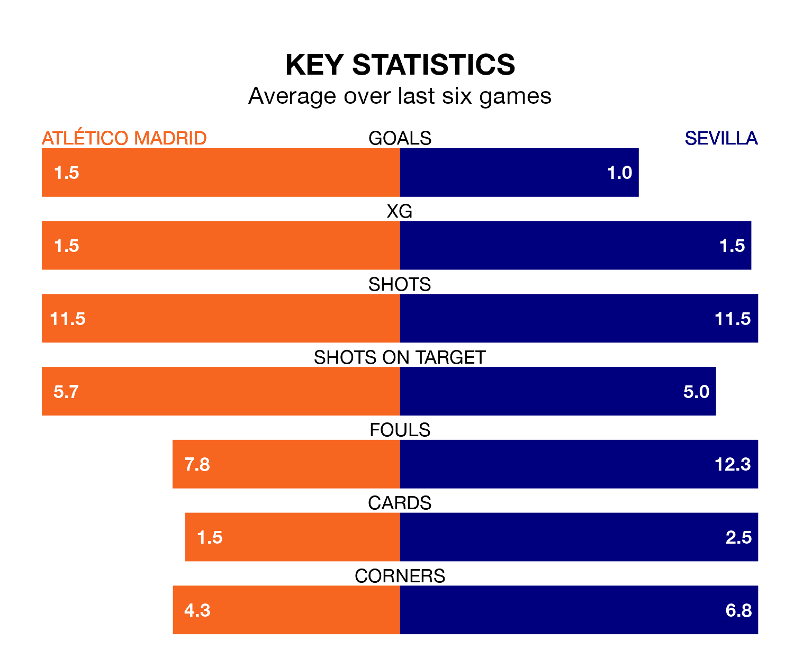

Atlético Madrid are heavy favourites to keep all three points at home in Saturday's kick-off against Sevilla.
Atlético Madrid, who sit third in La Liga with 17 games played, are priced at 1.4 to seal victory at the Estádio Cívitas Metropolitano.
Sitting 10 places and 19 points behind them in the table, Sevilla are 6.5 to win with *Betting Company*, while the draw is at 4.6.
With 35 goals in 17 games so far this season, Atlético are the league's third-highest scorers with 2.1 goals per game. And they are conceding fewer than average, letting in 19 goals at a rate of 1.1 per game.
Sevilla are also above average scorers, with 1.4 goals per game, compared to a league average of 1.3. They have also conceded 1.4 goals per game.
In the last 10 years, Atlético and Sevilla have played each other on 22 occasions. Atlético won eight of them, Sevilla five, and they drew nine times.
On average, Atlético Madrid scored 1.7 goals and Sevilla 1.0 in those matches.
Their last meeting was on August 6, when they played out a 1-1 draw.
In Antoine Griezmann, Atlético Madrid have one of the league's most on-form strikers so far this season. He has notched 11 goals in 17 appearances, to sit third in the scoring charts.
His goal rate of one every 127 minutes is quicker than that of Youssef En-Nesyri, the visitors' top scorer with a goal every 231 minutes, and a total of five goals in 16 games.
The home side are in mixed form in La Liga, with three wins and a draw from their last six games.
With a win and two draws over that period, Sevilla's form is worse – they have taken five points from 18, compared to Atlético's 10.
Atlético's last match was on Tuesday, a 3-3 draw against Getafe CF, with Griezmann (two) and Alvaro Morata getting the goals for Atlético Madrid.
Sevilla beat Granada CF 3-0 last time out, also on Tuesday, with Adrià Pedrosa, Lucas Ocampos and Sergio Ramos on the scoresheet.
Saturday's match will be refereed by Javier Alberola Rojas, who has taken charge of eight La Liga games so far this season, issuing one red card and booking 38 players. He has awarded four penalties.
The last Atlético game Alberola Rojas refereed was a 3-1 home win against Real Madrid on September 24. His last Sevilla match was their 1-0 loss away at RCD Mallorca on December 9.
Updated: 12:43, 20/12/23